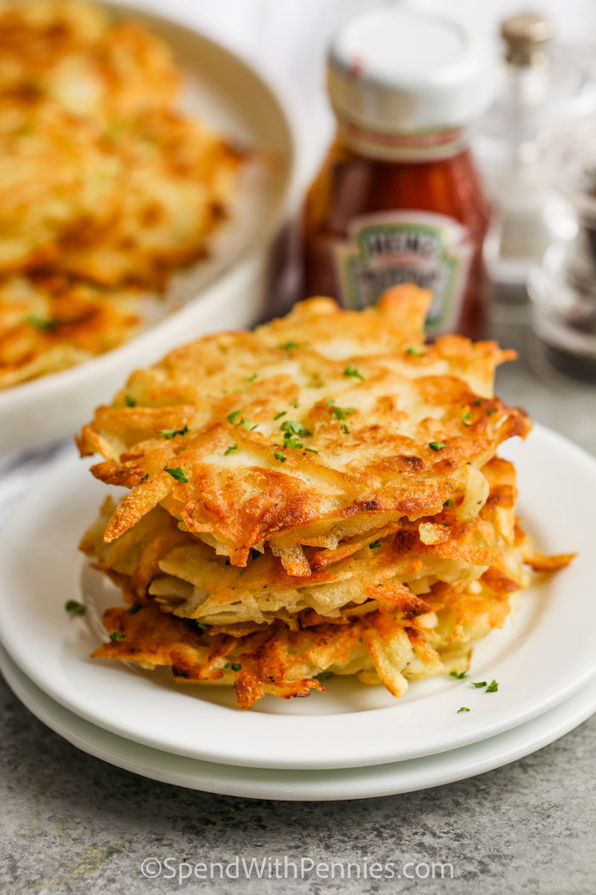

Hashbrowns

Description
This recipe is a really nice way to use up leftover mashed potatoes. If you like you could fry the hashbrowns up and then freeze them in airtight bags. You can pop them in the toaster to reheat them! An easy breakfast!
Ingredients
- 2 cups mashed potatoes
- 1 egg, beaten
- 1 onion, finely diced
- ½ teaspoon salt
- ¼ teaspoon ground black pepper
- 2 tablespoons olive oil
Directions
- Beat egg in a medium size mixing bowl. Mix egg and onion with mashed potatoes. Add salt and pepper.
- Heat olive oil in a medium size frying pan, over a medium heat. Scoop the potato mixutre into the frying pan in 4 inch circles, pat with a spatula to flatten the mounds to approximately 1/2 to 1 inch thick. Cook until bottom is browned. Flip the patty over and brown on the other side.